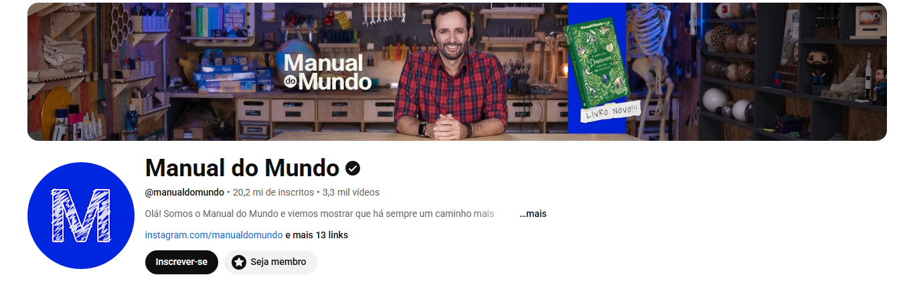
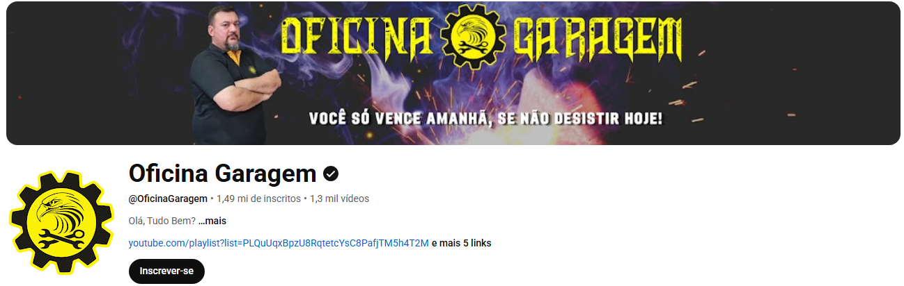
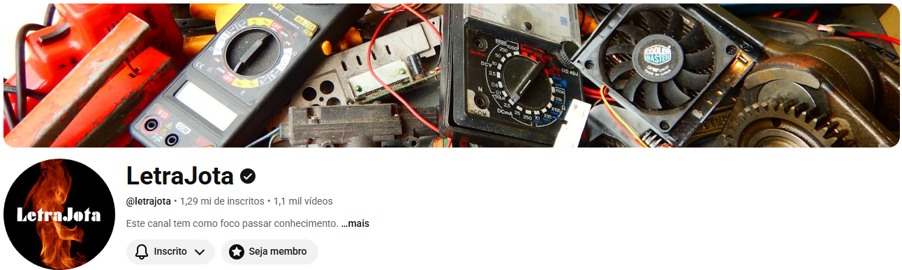
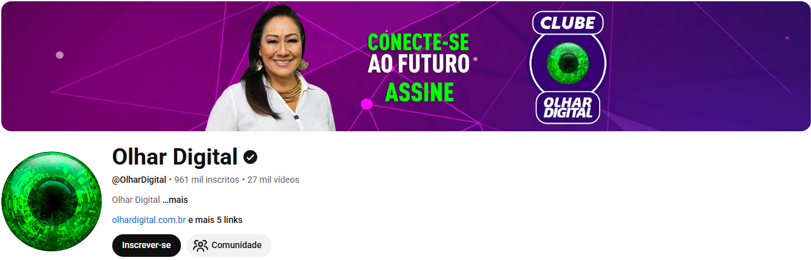
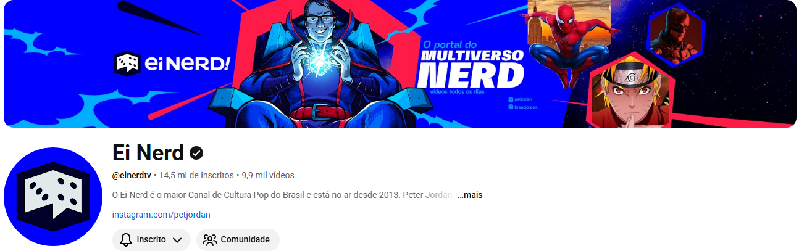

Canal brasileiro de educação e entretenimento criado por Iberê Thenório, famoso por experimentos científicos, curiosidades e conteúdos educativos.

Canal focado em solda, serralheria, mecânica industrial e fabricação de ferramentas artesanais.

Canal brasileiro focado em curiosidades, experiências, tecnologia, mecânica e projetos criativos.

Canal brasileiro de tecnologia e inovação que traz notícias, análises e conteúdos sobre inteligência artificial.

Canal brasileiro de entretenimento geek criado por Peter Jordan, focado em filmes, séries, games e cultura pop.